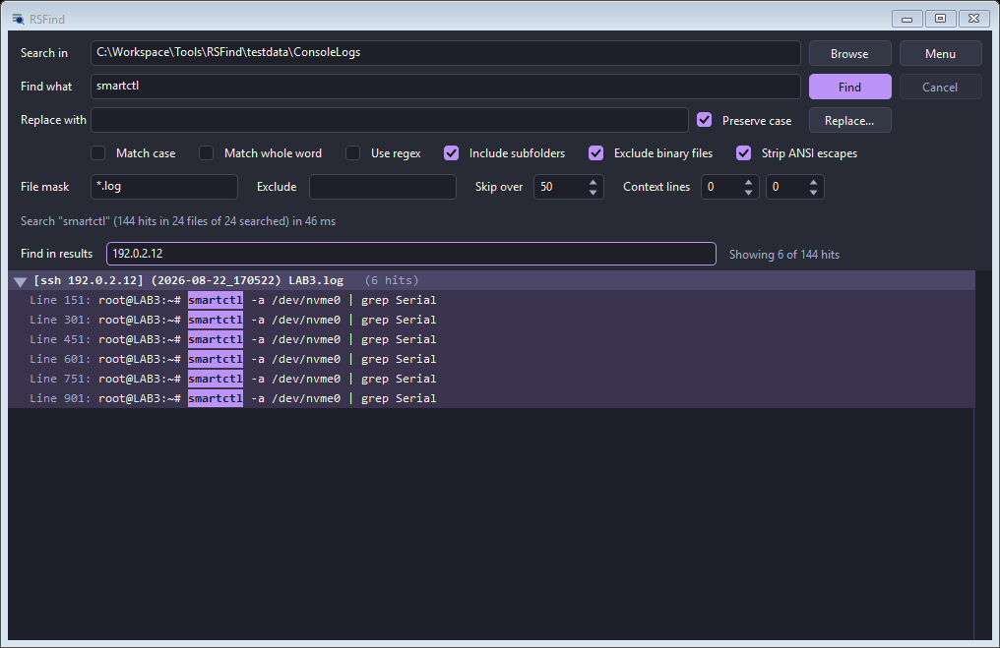
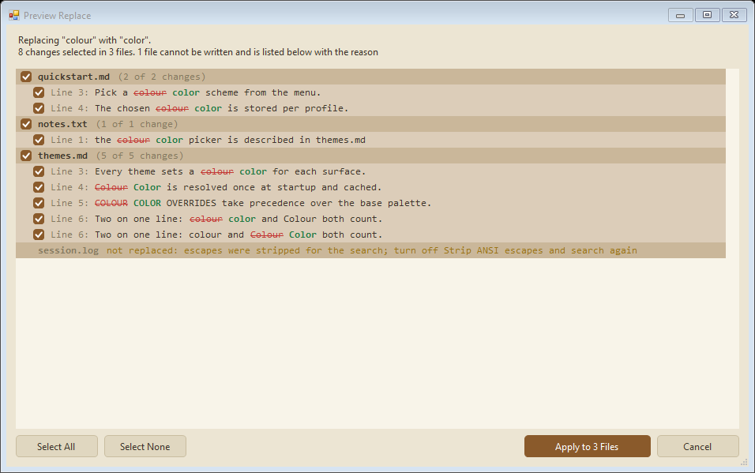
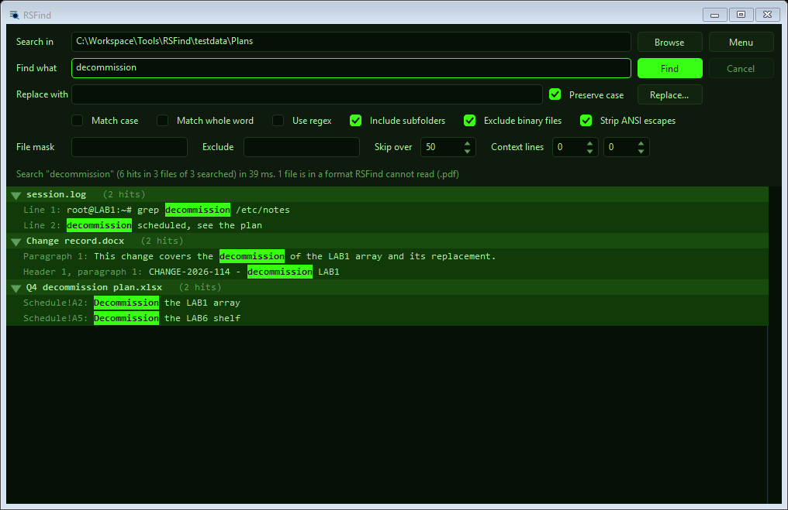

Every matching line, grouped by file.
Classic

Ctrl+F narrows a thousand hits to one host.
Nocturne

Nothing is written without a preview.
Canvas

Reads inside spreadsheets and documents.
Phosphor